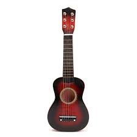

he guitar is a type of chordophone, traditionally constructed from wood and strung with either gut, nylon or steel strings and distinguished from other chordophones by its construction and tuning. The modern guitar was preceded by the gittern, the vihuela, the four-course Renaissance guitar, and the five-course baroque guitar, all of which contributed to the development of the modern six-string instrument.
There are three main types of modern acoustic guitar: the classical guitar (Spanish guitar/nylon-string guitar), the steel-string acoustic guitar, and the archtop guitar, which is sometimes called a "jazz guitar". The tone of an acoustic guitar is produced by the strings' vibration, amplified by the hollow body of the guitar, which acts as a resonating chamber. The classical guitar is often played as a solo instrument using a comprehensive
finger-picking technique where each string is plucked individually by the player's fingers, as opposed to being strummed. The term "finger-picking" can also refer to a specific tradition of folk, blues, bluegrass, and country guitar playing in the United States. The acoustic bass guitar is a low-pitched instrument that is one octave below a regular guitar.he guitar is a type of chordophone, traditionally constructed from wood and strung with either gut, nylon or steel strings and distinguished from other chordophones by its construction and tuning. The modern guitar was preceded by the gittern, the vihuela, the four-course Renaissance guitar, and the five-course baroque guitar, all of which contributed to the development of the modern six-string instrument.
There are three main types of modern acoustic guitar: the classical guitar (Spanish guitar/nylon-string guitar), the steel-string acoustic guitar, and the archtop guitar, which is sometimes called a "jazz guitar". The tone of an acoustic guitar is produced by the strings' vibration, amplified by the hollow body of the guitar, which acts as a resonating chamber. The classical guitar is often played as a solo instrument using a comprehensive
finger-picking technique where each string is plucked individually by the player's fingers, as opposed to being strummed. The term "finger-picking" can also refer to a specific tradition of folk, blues, bluegrass, and country guitar playing in the United States. The acoustic bass guitar is a low-pitched instrument that is one octave below a regular guitarThere are three main types of modern acoustic guitar: the classical guitar (Spanish guitar/nylon-string guitar), the steel-string acoustic guitar, and the archtop guitar, which is sometimes called a "jazz guitar". The tone of an acoustic guitar is produced by the strings' vibration, amplified by the hollow body of the guitar, which acts as a resonating chamber. The classical guitar is often played as a solo instrument using a comprehensive
finger-picking technique where each string is plucked individually by the player's fingers, as opposed to being strummed. The term "finger-picking" can also refer to a specific tradition of folk, blues, bluegrass, and country guitar playing in the United States.
| There are three main types of modern acoustic guitar: the classical guitar (Spanish guitar/nylon-string guitar), the steel-string acoustic guitar, and the archtop guitar, which is sometimes called a "jazz guitar". The tone of an acoustic guitar is produced by the strings' vibration, amplified by the hollow body of the guitar, which acts as a resonating chamber. | |
|---|---|
| There are three main types of modern acoustic guitar: the classical guitar (Spanish guitar/nylon-string guitar), the steel-string acoustic guitar, and the archtop guitar, which is sometimes called a "jazz guitar". The tone of an acoustic guitar is produced by the strings' vibration, amplified by the hollow body of the guitar, which acts as a resonating chamber. | |
| There are three main types of modern acoustic guitar: the classical guitar (Spanish guitar/nylon-string guitar), the steel-string acoustic guitar, and the archtop guitar, which is sometimes called a "jazz guitar". The tone of an acoustic guitar is produced by the strings' vibration, amplified by the hollow body of the guitar, which acts as a resonating chamber There are three main types of modern acoustic guitar: the classical guitar (Spanish guitar/nylon-string guitar), the steel-string acoustic guitar, and the archtop guitar, which is sometimes called a "jazz guitar". The tone of an acoustic guitar is produced by the strings' vibration, amplified by the hollow body of the guitar, which acts as a resonating chamber. |
contact